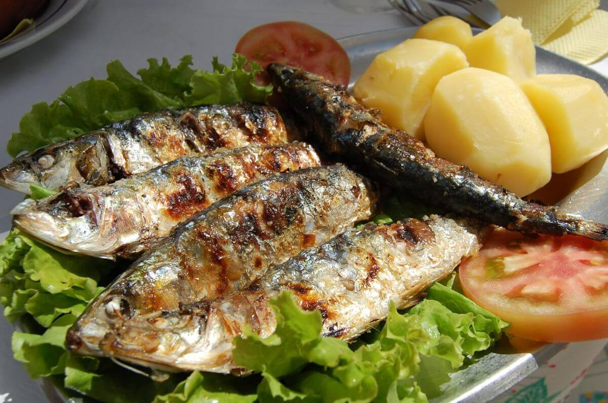

SARDINHAS ASSADAS

INGREDIENTS
- 8-10 fresh sardines, cleaned and gutted
- 1/4 cup olive oil
- 4 garlic cloves, minced
- 1 lemon, sliced
- Salt and pepper to taste
INSTRUCTIONS
- Preheat the grill to medium-high heat.
- In a small bowl, mix together the olive oil, garlic, salt, and pepper.
- Brush the sardines with the olive oil mixture, making sure to coat them evenly.
- Place the sardines on the grill and cook for 3-4 minutes per side, or until they are cooked through and crispy.
- Remove the sardines from the grill and serve hot, garnished with lemon slices.
- Sardinhas Assadas are traditionally served with a simple tomato and onion salad, and bread to mop
up the juices.